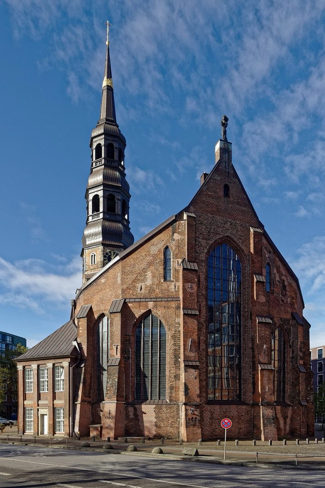

Hamburg, Free Imperial City

The city then. Northern Germany's metropolis: a rich, free port city with public opera (Germany's first), celebrity critics (Mattheson), five great churches in permanent musical rivalry, and — at St. Catherine's — the organ Reincken had presided over since before Bach was born: four manuals, fifty-eight stops, the 32-foot facade principal Bach praised all his life as unmatched.
Bach's two Hamburgs. As a Lüneburg schoolboy (the walking trips): the pilgrimage city where the stylus phantasticus could be heard at its source. As a 35-year-old widower (November 1720): the site of his most celebrated audition-that-wasn't — the half-hour An Wasserflüssen Babylon improvisation, Reincken's blessing, and the organist post sold to a 4,000-mark bidder while the greatest organist alive went home. Later, the Hamburg thread continues without him: Telemann ran the city's music for forty years, and Emanuel Bach succeeded his godfather there — the family story closing its northern loop.
What survives today. St. Catherine's was bombed and rebuilt; its organ has been reconstructed (completed 2013) to the disposition of Reincken's instrument — you can now hear, in the room, approximately what the teenage Bach walked thirty miles for.